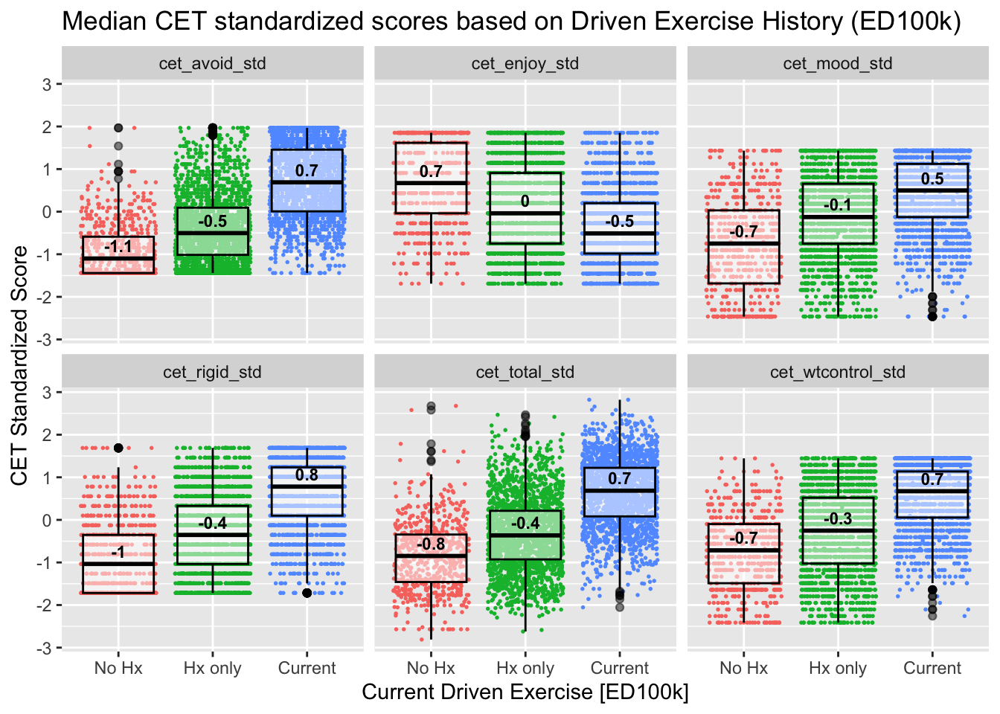
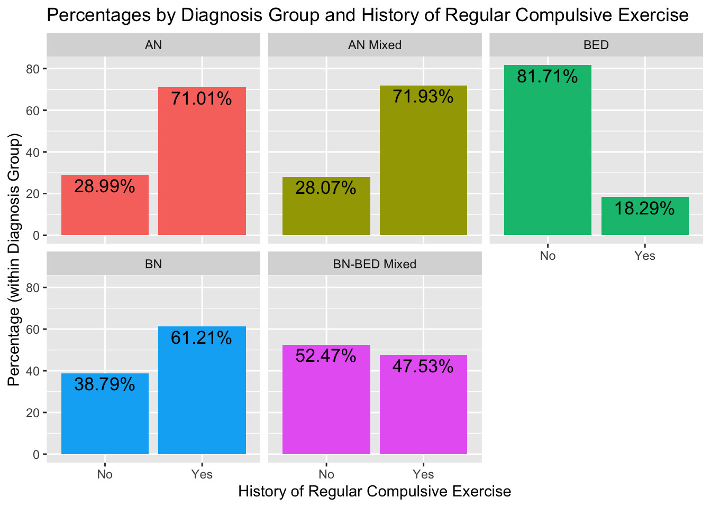
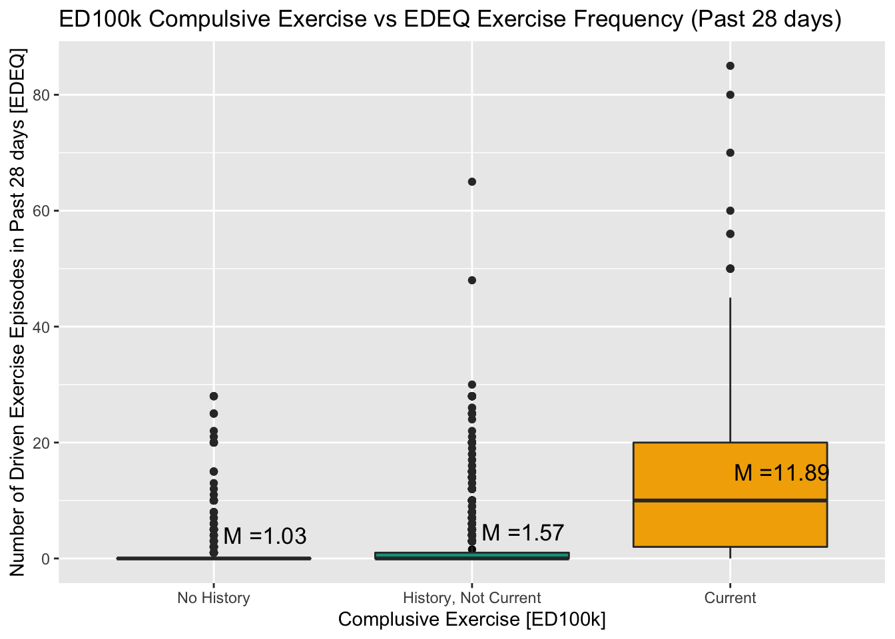
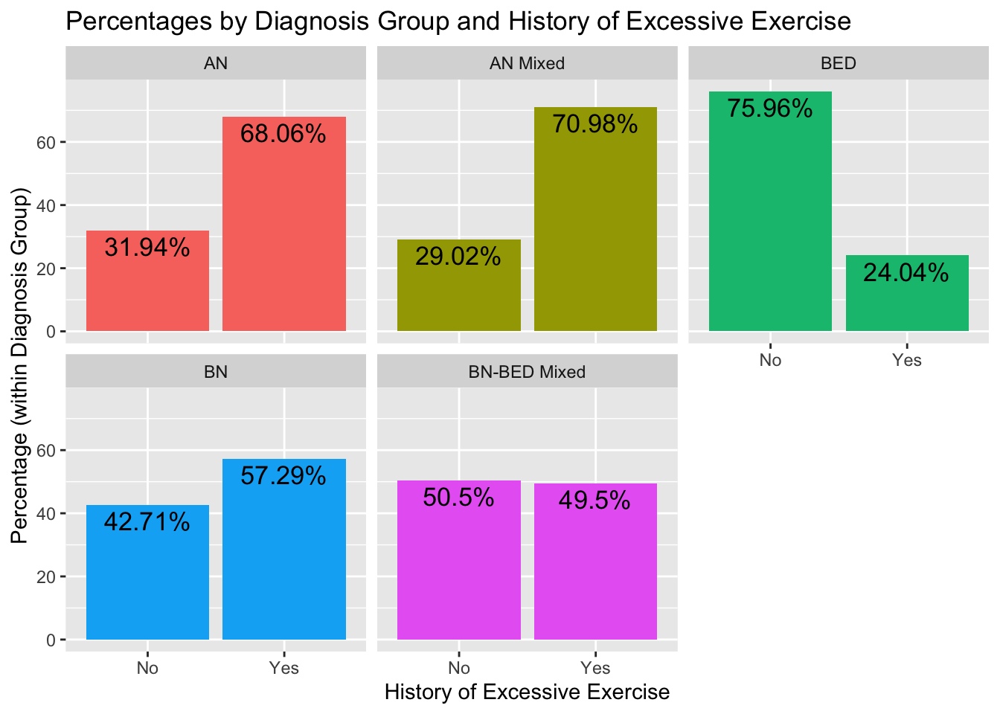
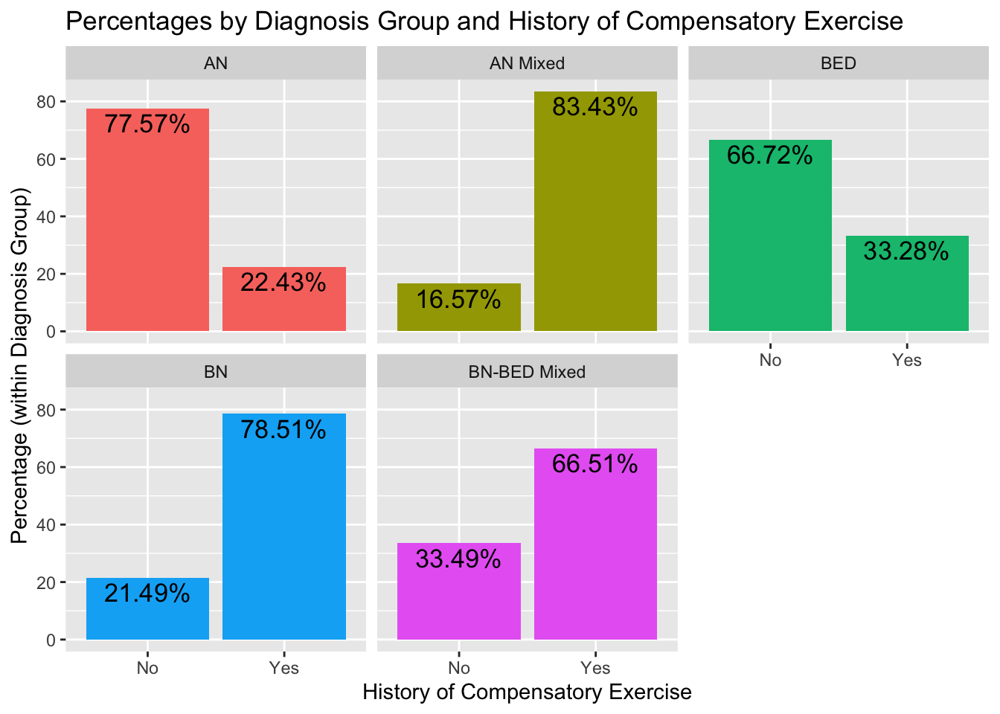
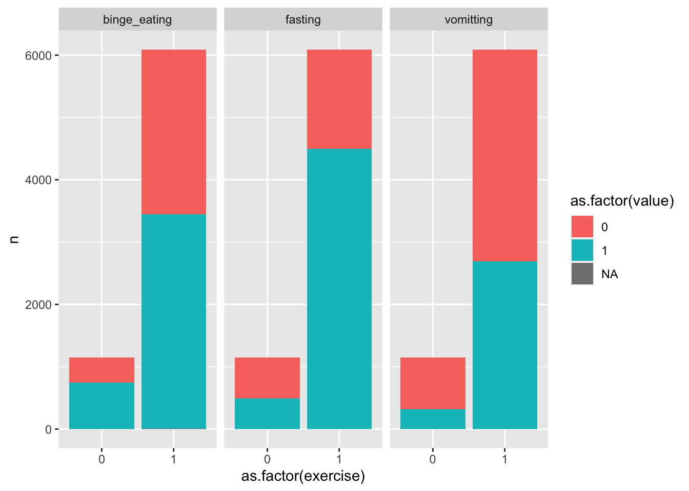
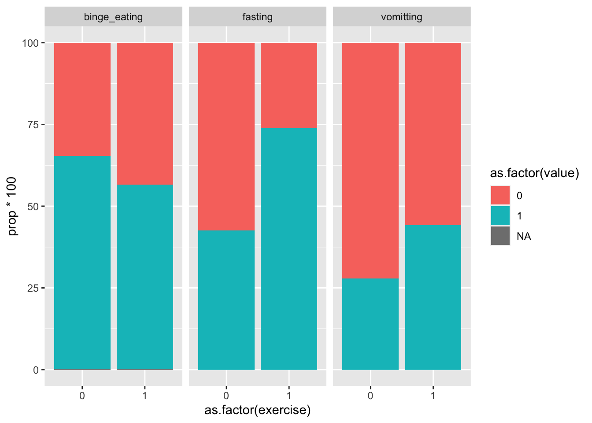
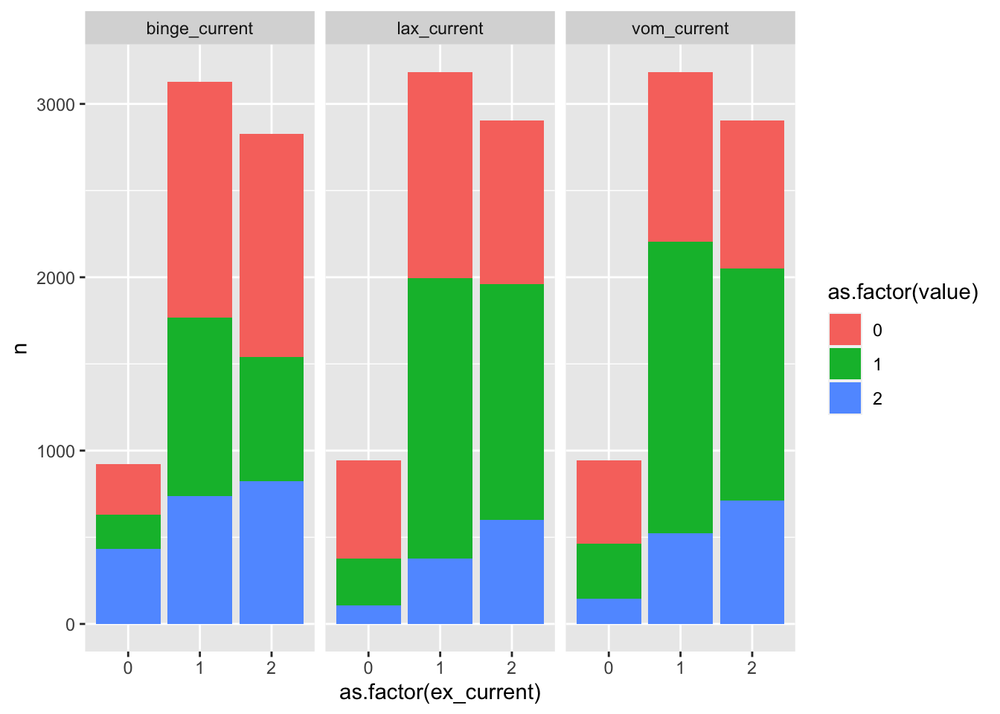
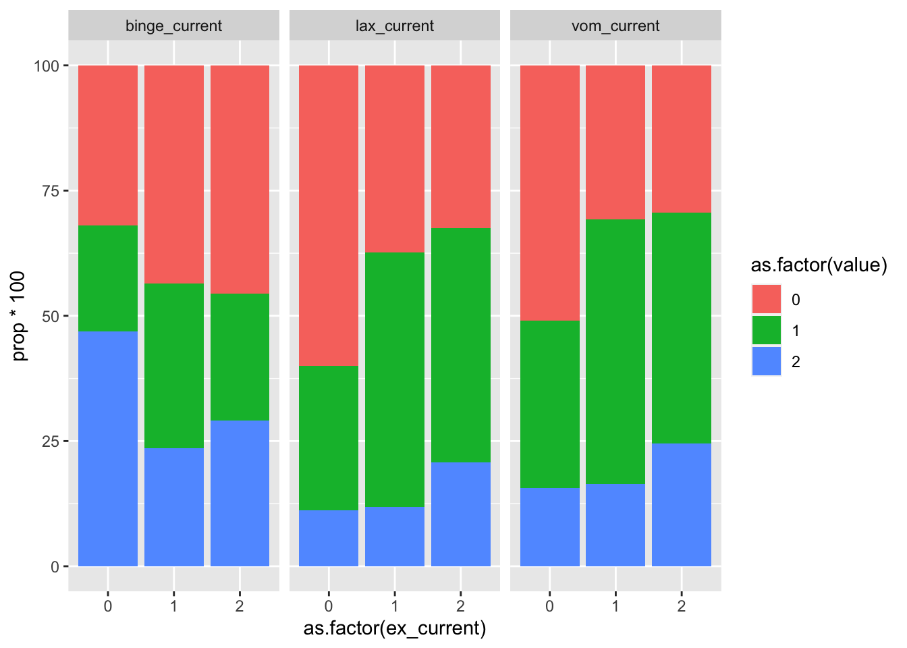

EDGI Exercise Validation Paper Results
Preliminary Aim - Develop a scoring algorithm
The first aim of this paper is to develop a scoring algorithm for a ED100k exercise items in an ED sample based on theoretical literature and available ED100k items which captures and defines rates of:
1. Compulsive Exercise
Ever and Regular Compulsive Exercise
Duration
Highest Frequency
2. Exercise Addiction
3. Excessive Exercise
4. Compensatory Exercise
5. A broad definition of Maladaptive Exercise
In the sample
Scoring
The ED100k included 12 questions regarding maladaptive exercise. The first question which all participants were asked, inquires as to whether individuals ever exercised to intentionally control weight and shape (Q1). Only those who endorsed EVER Exercising to intentionally control weight or shape were asked to respond to two additional questions which asked about exercise in more detail, including two questions (Q2, Q3) about whether individuals ever felt compelled to exercise and whether they felt uneasy or distressed if unable to exercise. In a third step, those who reported ever exercising to intentionally control weight and shape and answered ‘Yes’ to either Q2 or Q3 were additionally asked three questions (Q4-Q6) about whether exercise interfered with life activities or diet, along with questions regarding the onset (Q7), duration (Q8), and frequency (Q9) of their compulsive exercise, along with whether they engaged in the behavior currently (Q10) and the last age at which they engaged in the behavior (Q11). In a separate section, all participants were asked whether they had ‘exercised excessively’ specifically to compensate for episodes of binge eating or overeating (Q12).
During recoding, those (n = 945) who reported no to Q1 - exercise to control shape and weight, were marked as ‘0’ for follow-up questions. Those who reported that they had engaged in exercise to for weight and shape control but ‘No’ to both Q2 & Q3 (n = 200) were marked as ‘0’ for Q4-Q11.
1. Compulsive Exercise
Individuals were classified as compulsive exercisers if they reported any exercise to intentionally control weight and shape AND either feeling compelled to exercise or distress if unable to exercise for any amount of time – this included 84.17% of the US EDGI sample. Amongst those who reported ANY exercise for shape and weight control and were asked explicitly about compulsive exercise (not skipped), rates of endorsement for either feeling compelled to exercise OR feeling distressed when unable to exercise are high (96.82%); among those who reported exercise for shape and weight control ‘more often’, endorsement of either feeling compelled to exercise OR feeling distressed when unable to exercise is 99.52% – indicating that these two questions may be unnecessary for defining compulsive exercise within eating disordered samples – those who report ever using exercise to intentionally control shape and weight, particularly if that was reported regularly, almost universally report either feeling compelled to exercise or feeling distressed when unable to exercise.
Using a more strict definition of compulsive exercise than having ever endorsed this behavior, ‘regular compulsive exercisers’ were defined as those who endorsed using exercise as a weight control behavior ‘more often’, with symptoms lasted least three months in duration. 71.17% of those who reported any exercise to control weight and shape and the vast majority (98.2% of individuals who endorsed exercising ‘more often’ met this strict definition, highlighting that (1) most individuals with eating disorders who report compulsive exercise are engaging in this behaivor regularly, and (2) further indicating high convergent validity of the first question regarding regular exercise to control weight and subsequent questions which further define compulsive exercise. Specifically, individuals eating disorders who endorse using exercise to intentionally control weight ‘more often’ are indeed engaging in this behavior for a substantive period of time (> 3 months; a time period of equivalent to diagnostic levels of other intentional weight control behaviors). Further exploration of duration of compulsive exercise indicated that the majority of individuals in the sample reported compulsive exercise lasting > 1 year (see Figure 1).
For those who reported engaging in compulsive exercise, the reported median age at the last time they engaged in this behavior was 23 (current median age = 29. About half (47.7%) of the sample reporting compulsive exercise did not report age of last compulsive exercise – potentially indicative of ongoing engagement in this symptom. Median age of first engaging in compulsive exercise in the sample who reported this behavior regularly was 16 years old. 40.17% of the overall sample and 53.08% of those reporting regular compulsive exercise reported that this was an ongoing eating disorder symptom.
2. Exercise Addiction
We defined exercise addiction as having regular compulsive exercise for at least three months AND having exercise interfere with one’s life. Individuals with any compulsive exercise symptoms were also asked whether this interfered with their life in a series of 3 questions – whether it caused them to change eating habits, decline opportunities to be with friends, or whether they exercised despite illness or injury. Overall, 79.86% of individualsin the overall sample reported at least one of these three life interfering symptoms. Among only those reporting regular exercise for weight control, rates of endorsement of life interfering symptoms were 97.96%, providing further validation for the first item assessing frequency of exercise to control weight and shape, and indicating that the vast majority of individuals reporting regular exercise for weight loss to control weight and shape also experienced life interfering sequellae of this behavior. Further, in both the overall sample as well as those with regular exercise for weight control, the modal number of exercise interference items was all 3.
Exercise Addiction was defined in the ED100k as engaging in regular (‘more often) exercise for weight or shape control coupled with feeling compelled to exercise or distressed if unable to exercise, which lasted for at least 3 months and included at least one life interfering symptom.60.89% of individuals in the overall sample, 70.15% of those reporting any exercise for weight control, and almost all of those who reported exercising for weight control ’more often’ (96.76%) met this criteria.
4. Excessive Exercise
Excessive exercise was defined as compulsive exercise occurring for at least one month, every day or nearly ever day. Among the whole sample, rates are 60.74, and among the subsample who reported exercising for weight loss ‘more often’, 81.69% met criteria for this exercise being excessive. While the majority of individuals reporting regular exercise for weight and shape control at some point (along with the highly overlapping samples meeting ‘compulsive exercise’ and ‘exercise addiction’) also report exercise that occurs with high frequency (nearly every day), this is not as universal as other symptoms that were assessed.
5. Compensatory Exercise
All participants were asked about compensatory exercise (be_icb__5), with 50.41% of the sample reporting compensatory exercise. Among those with regular exercise, rates were somehwat higher (61.38). Overall, compensatory exercise was common, but somewhat less prevlant than other maladaptive exercise behaviors.
Broad Maladaptive Exercise
A broad ‘Maladaptive Exercise’ variable was the final exercise definition that was derived, which included individuals who reported regular compulsive exercise OR any compensatory exercise. Among the full sample, 73.78% of individuals met criteria for this broad definition.
Convergent Validity
Exercise History Definitions
When examining overlap in compensatory and compulsive exercise, the vast majority of individuals endorsing compensatory exercise also endorsed compulsive exercise, with very few indivdiuals endorsing compensatory exercise without also endorsing compulsive exercise


Confusion Matrix and Statistics
Reference
Prediction 0 1
0 1086 59
1 2497 3593
Accuracy : 0.6467
95% CI : (0.6356, 0.6577)
No Information Rate : 0.5048
P-Value [Acc > NIR] : < 2.2e-16
Kappa : 0.2888
Mcnemar's Test P-Value : < 2.2e-16
Sensitivity : 0.9838
Specificity : 0.3031
Pos Pred Value : 0.5900
Neg Pred Value : 0.9485
Prevalence : 0.5048
Detection Rate : 0.4966
Detection Prevalence : 0.8417
Balanced Accuracy : 0.6435
'Positive' Class : 1
Current Exercise

Proportion meeting CET Clinical Cutoff based on Driven Exercise History

Sensitivity and Specificity of Current Driven Exercise on ED100k for CET Clinical
Confusion Matrix and Statistics
Reference
Prediction 0 1
0 2243 418
1 699 1178
Accuracy : 0.7539
95% CI : (0.7411, 0.7663)
No Information Rate : 0.6483
P-Value [Acc > NIR] : < 2.2e-16
Kappa : 0.4811
Mcnemar's Test P-Value : < 2.2e-16
Sensitivity : 0.7381
Specificity : 0.7624
Pos Pred Value : 0.6276
Neg Pred Value : 0.8429
Prevalence : 0.3517
Detection Rate : 0.2596
Detection Prevalence : 0.4136
Balanced Accuracy : 0.7503
'Positive' Class : 1
Number of Days in the Past 28 reported Driven Exercise based on Driven Exercise History

Discriminant Validity
Perfectionism and OCD Symptoms
Prevalence Across Diagnostic Groups

History of Compulsive Exercise was reported most frequently in the AN, AN-Mixed Diagnosis, and BN groups, around 60% in each of these diagnostic groups reporting history of regular engagment. Compulsive exercise was also reported in half of those with BN-BED (50%) and a portion (20%) of those with BED.




Associations with Illness History
Associations with Binge Eating, Purging, and Fasting
Historical


Current

